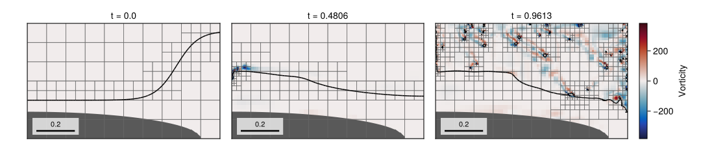
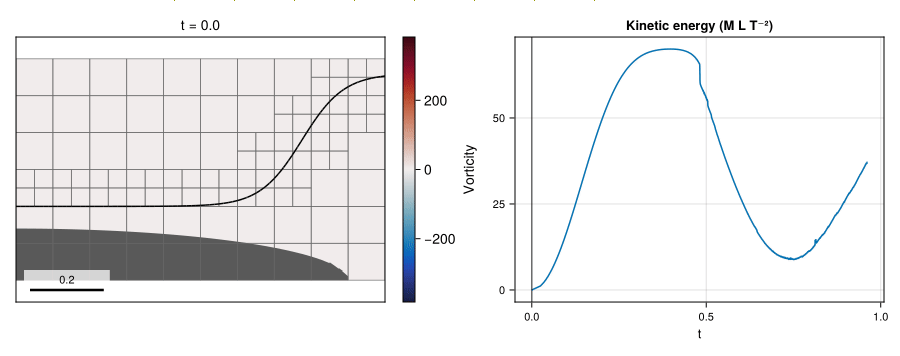

11 – Large gas-pocket impact
A steep liquid front evolves over an embedded elliptical bathymetry in a scaled two-phase impact benchmark.

At a glance
| Physics | Liquid/gas densities (1000, 1), dynamic viscosities (10⁻³, 1.75×10⁻⁵), surface tension 0.073 and gravity (0, -9.81). At scale=20 the nonperiodic domain is 1 × 0.6, with free-slip outer boundaries and an embedded elliptical solid. |
| Algorithms | Two velocities by default (TwoVelocityModel()), with frozen-interface WY transport and CMDGFMProjection() (a block-preconditioned BiCGSTAB solve); WY geometric VOF, :lhf PLIC with WY fallback, CGFM surface tension, monotonized-central (MonotonizedCentral()) momentum advection, implicit-midpoint viscosity, and CG/tree-geometric multigrid for diffusion. The interface indicator targets min(1,max_level) and the liquid-velocity vorticity indicator refines up to max_level at 0.25 and coarsens below 0.25/3. Both use ymin=refinement_ymin; AMR is checked every 5 steps with coarsen delay 10. |
| Worth varying | scale=20 by default; changing it rescales the prescribed domain and initial geometry while leaving the listed physical coefficients fixed. max_level=4 changes the vorticity-refinement ceiling; final_time=nothing selects 1.2 gravity periods. refinement_ymin overrides the default solid-adjacent exclusion height; velocity_model=OneVelocityModel() selects a shared velocity; numerics=NavierStokesOptions(advection=AdvectionOptions(scheme=LaxWendroff())) selects Lax–Wendroff momentum advection, which can leave visible dispersive noise in the vorticity of this impact. Other supported FlowSimulation options can be passed as keywords. |
| Validation status | In the documented level-3 run, liquid volume changes by −3.79913×10⁻⁹ from about 0.182426 over the full simulation. There are 1312 cumulative unresolved-curvature face events, and the finest blocks touching the solid are at level 1 at the final time; the later fragmented interface is not resolved well enough to validate entrainment. No experimental impact or interface-position error is claimed. |
| Cost | The documented two-velocity run used max_level=3, T≈0.961327 (1.2 gravity periods), 16652 steps, 2200 mesh updates and 10128 final cells; setup and simulation took 5732.4 s and the whole script 5778.1 s on one thread, including first-call compilation. The example default uses max_level=4. |
Gallery timings: Julia 1.12.7, one Julia thread and one BLAS thread, AMD Ryzen 9 5950X; package loading is excluded.
Setup
The liquid initially lies below the tanh-shaped profile, while the negative side of the ellipse is solid. At the default scale,
\[\eta(x)=0.38+0.18\tanh\!\bigl(8.8(x-0.775)\bigr),\qquad \phi_s(x,y)=\sqrt{(x/0.9)^2+(y/0.14)^2}-1.\]
The ellipse reaches its highest point at y=2.8/scale=0.14. Adding two level-zero cell heights (2 × 0.025) gives 0.19; with a base-block height of 0.1, the next block boundary is at 0.2, and half a coarse cell above it gives refinement_ymin=0.2125. The geometry indicator is omitted because it would refine the solid boundary. Blocks below this threshold request coarsening, but 2:1 grading can still refine solid-adjacent blocks by one level next to refined blocks.
The initial velocity is zero. For wavelength λ=1, the script uses the gravity-wave timescale
\[t_g=\sqrt{\frac{\rho_l+\rho_g}{\rho_l-\rho_g}\frac{2\pi\lambda}{g}}, \qquad T=1.2t_g.\]
The fluids and gravity are unchanged when the geometry is rescaled. With a gravity-based velocity scale, the smaller default geometry has lower Reynolds and Weber numbers than a larger one.
See the method reference for embedded cut cells, two-phase transport, forcing and adaptive refinement.
The vorticity plots show the intrinsic value of the majority phase in each cell, with the reconstructed interface drawn on top. The vorticity refinement indicator uses the liquid velocity, not the gas velocity.
Run
From the repository root, a short headless run is:
include("examples/11_lgpi/lgpi.jl")
run = run_example(max_level=1, final_time=0.1)
print_simulation_summary(run.flow, run.result)The first command runs the full two-velocity level-3 calculation and regenerates the docs assets; the second runs the level-4 default without exporting figures. Both use the full end time and are subject to the validation caveat above:
julia --project=examples -t 1 examples/11_lgpi/make_figures.jl
julia --project=examples -t 1 examples/11_lgpi/lgpi.jlThe figure generator always runs the simulation. It accepts final_time to change the simulated end time and display_time to limit the exported frames without shortening the simulation:
include("examples/11_lgpi/make_figures.jl")
make_figures(display_time=0.9)By default the figures show all recorded frames.
Results
The hero displays two-velocity vorticity, the PLIC interface, AMR blocks and filled bathymetry at three times from the level-3 run.

The GIF shows the same run with block outlines and a synchronized kinetic-energy cursor; the energy plot includes the full simulation history. Vorticity uses a symmetric range of ±383.11, the 99.9th percentile of rasterized magnitudes in the displayed frames. Larger values saturate: the sampled peak is 3814.59 near (x,y)=(0.00625,0.59875) at t≈0.5047. The final displayed frame is at t≈0.9613.
The later fragmented interface and its wall interaction are under-resolved at this level; the full animation is shown for context, not as validated entrainment.
Variations
run_example(max_level=1, final_time=0.1) # inexpensive short evolution
run_example(max_level=2, final_time=0.3) # shorter level-2 evolution
run_example(scale=10, max_level=1, final_time=0.1) # rescale initial geometry
run_example(max_level=1, final_time=0.1, velocity_model=OneVelocityModel()) # shared velocityFiles
- lgpi.jl: benchmark geometry and simulation.
- make_figures.jl: three snapshots and animation.
assets/: generated PNG and GIF.